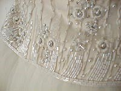

|
 This dress took me by surprise. Initially, I figured I wouldn't get a wedding gown at all, but rather spend the money on some sharp little Prada number. But as a favor to my Mom, I went to Kentucky to try on dresses. After a few grumpy shop visits, we finally went to see Sher. Sher has been matching wedding dresses to Southern belles for over 30 years, and she had me summed up before she even met me. Sher brought out one fabulous dress after another. At the end of the day, it was between a very "Jen" dress and this dress (which I dubbed the "show-stopper" dress. Finally, I decided to go for the princess look because I can look like Jen every other day of my life, but how often do I get to wear something as over-the-top as this. Despite all expectations, I fell in love with this dress. |